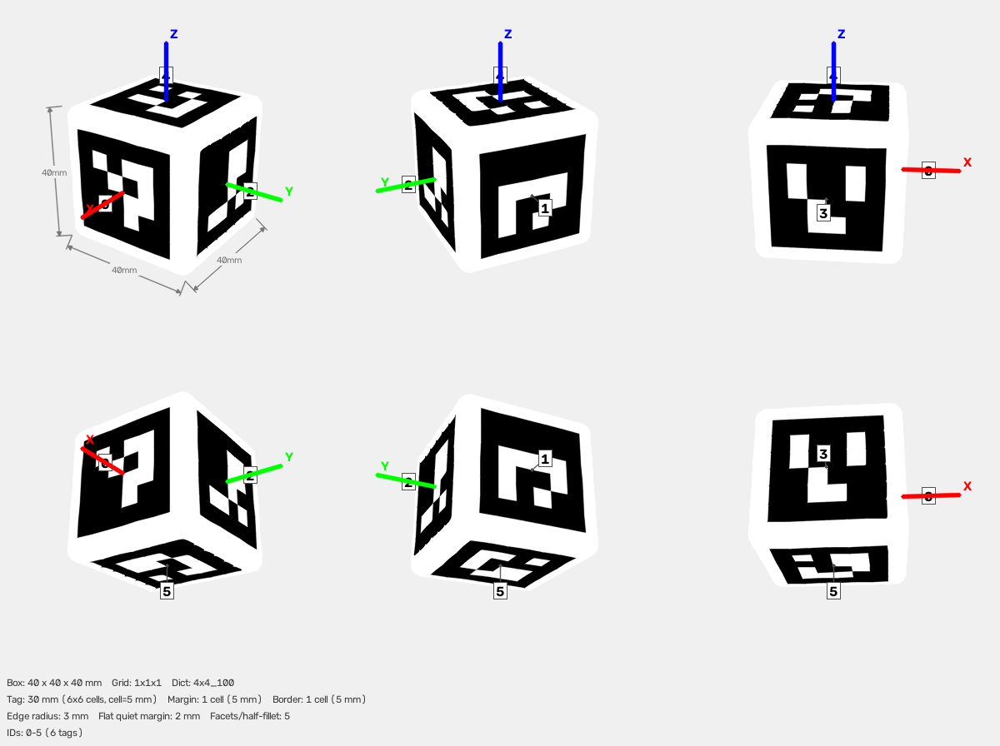

One printable cube, one reusable contact-safe geometry system.
I added configurable contact-safe rounding to the general AprilCube generator. I then used those generic controls to generate the selected compact target: a 40 mm cube with a 3 mm radius, while keeping all six 30 mm fiducials exactly planar.
What I did, in order
Connected and preserved the upstream project
The workspace’s empty Git repository was connected to younghyopark/aprilcube, fetched, and checked out at upstream baseline 9d679b5. I maintained running_notes.md throughout development, then squashed the completed work into one reviewable fork commit.
Selected the existing 40 mm test cube
The original candidate was models/1x1x1_30_cube/cube.3mf: a sharp 40 × 40 × 40 mm cube with six 30 mm markers. I verified that its 3MF archive was valid and contained Bambu Studio black/white PLA metadata.
Stopped treating “printable” as “robot-contact appropriate”
After you identified the pressure-sensor risk, I reviewed the geometry and found exact 90° printed edges and trihedral corners. The initial minimum-change proposal was a 40 mm cube with 3 mm fillets. A larger 50 mm / R8 candidate was generated later, then removed when we chose the lighter and more compact R3 design.
Added rounding to the generator, not only to one STL/3MF
I added configuration, validation, analytic cuboid rounding, topology-aware voxel rounding, color-boundary preservation, regenerated previews and MuJoCo assets, automated tests, and usage documentation.
Generated and checked the DEX3 cube
The printable output is models/dex3_safe_cube/cube.3mf. Its exact recipe is examples/dex3_safe_cube.yaml.
Why the sharp geometry was a real tactile risk
A grasp force is not dangerous only because of its total magnitude. The local stress field matters. An edge or corner can deliver the same force through a much smaller initial contact patch, loading only a few tactile elements and creating a local peak before the controller sees a broad, stable grasp.
Failure mechanisms I designed against
- Edge line contact: pressure begins along a narrow printed ridge.
- Corner point contact: a trihedral corner can become the first and only contact during misalignment.
- Layer and seam defects: a nominally rounded shape can still have a hard burr, seam blob, or support scar.
- Controller latency: a localized sensor can see a peak before the grasp settles over a wider area.
I did not claim a numerical pressure-reduction factor. That would require measured pad compliance, sensor package geometry, friction, actual normal force, and a validated contact model.
Geometry and marker allocation
| Parameter | Released value | Reason |
|---|---|---|
| Envelope | 40 × 40 × 40 mm | Compact original target scale with lower mass and material use. |
| Marker dictionary | 4x4_100 | Six IDs 0–5, one per face. |
| Marker bitmap | 6 × 6 cells | 4 × 4 data cells plus the mandatory one-cell black border. |
| Cell / marker | 5 mm / 30 mm | Readable physical target already consistent with the repository. |
| Nominal outer border | 5 mm per side | One 5 mm cell beyond the marker. |
| Fillet radius | 3 mm | Softens the original cube while retaining its compact envelope. |
| Flat quiet margin | 2 mm per side | 5 − 3 = 2 mm; curvature never touches the marker. |
| Surface resolution | 5 segments / half-fillet | Balances curvature fidelity and triangle count. |
flat marker margin = (34 − 30) / 2 = 2 mm per side

The feature applies to all three target descriptions
The repository supports simple cuboids and arbitrary polycube objects. I added the same user-facing controls to all of them, but the geometry engine differs because a multi-voxel object has concave corners, holes, and T-junctions that a single cuboid does not.
| Target type | How the shape is described | Rounding implementation | Result |
|---|---|---|---|
cuboid | Tag grid and physical cell sizes | Analytic tangent rounded box | Circular edge blends and spherical corner blends |
voxel_cuboids | One or more axis-aligned voxel blocks | Boolean union + spherical morphological opening | Exposed convex features rounded as one solid |
voxel_grid | Explicit occupied voxel cells | The same union/opening pipeline | Works for irregular, holed, stepped, and branched targets |
The only routing decision
The generator does not ask which robot will manipulate the target. It asks one geometric question: “is this one rectangular solid, or a union of voxels?” That choice selects the construction method. Both paths then return the same internal object: indexed vertices plus outward-wound triangles carrying black/white paint.
Per-mesh topology evidence
| Generated target | Envelope (mm) | Radius | Vertices | Triangles | Non-manifold edges |
|---|---|---|---|---|---|
| Rectangular cuboid | 60 × 60 × 32 | 3 mm | 3,052 | 6,100 | 0 |
| T | 72 × 24 × 72 | 2 mm | 3,173 | 6,342 | 0 |
| L | 72 × 24 × 72 | 2 mm | 2,446 | 4,888 | 0 |
| Stair | 72 × 24 × 72 | 2 mm | 3,120 | 6,236 | 0 |
| U | 72 × 24 × 72 | 2 mm | 3,685 | 7,366 | 0 |
| 3D plus | 72 × 72 × 72 | 2 mm | 6,730 | 13,456 | 0 |
| Spiral tower | 64 × 64 × 128 | 3 mm | 8,281 | 16,558 | 0 |
| Zigzag snake | 72 × 120 × 24 | 2 mm | 5,691 | 11,378 | 0 |
| Window frame | 96 × 24 × 96 | 2 mm | 6,088 | 12,176 | 0 |
| Chair | 72 × 72 × 120 | 2 mm | 9,883 | 19,762 | 0 |
0. Existing commands and YAML files still generate their original sharp geometry unless the user explicitly requests rounding.
How a cuboid becomes a tangent rounded cuboid
The cuboid path is analytic: every original face sample is projected onto a mathematically defined rounded-box surface. The key mental model is a smaller sharp box wrapped in a sphere of radius r. Sliding that sphere over the smaller box creates planar face centers, quarter-cylinders along edges, and one-eighth-spheres at corners—all tangent to one another.
1 · Shrink by the radius
The outer half-size is h = 20 mm. Subtract r = 3 mm on every side, giving the inner limit q = h − r = 17 mm.
2 · Find the local center
Clamp a sharp surface sample p into [−q,+q] on each axis. The clamped point a is the center of the relevant sphere or the axis of the relevant edge cylinder.
3 · Move exactly r outward
Compute direction d = p − a, normalize it, and set p′ = a + r·d/‖d‖. The distance from a to p′ is therefore exactly 3 mm.
p′ = a + r (p−a) / ‖p−a‖
Worked points from the released 40 mm / R3 cube
| Original sharp sample p (mm) | Clamped anchor a (mm) | Rounded point p′ (mm) | What it becomes |
|---|---|---|---|
(20, 10, −5) | (17, 10, −5) | (20, 10, −5) | Planar face. Only X is outside the inner box. The 3 mm projection returns to X=20 exactly, so the face center does not move. |
(20, 20, 0) | (17, 17, 0) | (19.121, 19.121, 0) | Cylindrical edge. X and Y are outside. The point lands on a quarter-circle of radius 3 around the inner edge axis. |
(20, 20, 20) | (17, 17, 17) | (18.732, 18.732, 18.732) | Spherical corner. All three axes are outside. The point lands on a radius-3 sphere centered at the inner corner. |
The three cases are not separate formulas. They fall out of the same clamp-and-normalize operation. The number of coordinates clamped—one, two, or three—automatically selects plane, cylinder, or sphere.
From the continuous surface to printable triangles
The projection equation defines a smooth ideal surface, but a 3MF or OBJ can store only vertices and flat triangles. The meshing problem is therefore: sample the circular blends finely enough, make neighboring faces use the same seam vertices, and never let a triangle straddle a black/white marker-cell boundary.
| Stage | What the implementation does | Why it is necessary |
|---|---|---|
| 1. Keep the logical grid | Each face still starts as the original rows and columns of marker cells. A patch remembers the Boolean color of its parent cell. | Subdividing geometry cannot change a marker bit. |
| 2. Insert fillet samples | _subdivide_cell_span inserts stations measured inward from both face boundaries. For R3 with five segments, the source-face offsets are 0, 0.6, 1.2, 1.8, 2.4, and 3.0 mm. | Each face contributes five chords to its half of the 90° edge blend, giving ten chords around the full quarter-circle. |
| 3. Project every sample | _rounded_box_point applies the clamp-and-normalize equation to each patch corner. | Face, edge, and corner samples all land on the same mathematical rounded box. |
| 4. Share seam vertices | CubeMeshBuilder._add_vertex indexes coordinates at 0.0001 mm precision. Identical samples generated from adjacent faces receive one vertex index. | A seam is watertight only when the two sides share topology, not merely nearly equal coordinates. |
| 5. Triangulate outward | Every small quadrilateral becomes (p00,p10,p11) and (p00,p11,p01). | The fixed winding gives consistent outward normals and a positive enclosed volume. |
Why the surface is tangent, and where approximation enters
At the boundary between a flat face and an edge blend, the circle reaches the face with the same surface normal as the plane. At the boundary between an edge cylinder and a corner sphere, both use the same radius and the same inner-box anchor. The ideal construction is therefore position-continuous and tangent-continuous. The stored mesh is still faceted: the projected vertices are exact points on that ideal surface, while straight triangle edges approximate the arcs between them. Increasing edge_segments reduces chordal faceting; it does not move or bend the planar marker area.
(20,20,20); its new diagonal point is (18.732,18.732,18.732). “Same envelope” means the same six bounding planes, not retention of the eight sharp vertices.
Pseudocode and exact source-function map
# one logical cell on one cuboid face
rows = subdivide_cell_span(row, radius, segments)
cols = subdivide_cell_span(col, radius, segments)
for each small rectangle (r0, r1, c0, c1):
p00, p10, p01, p11 = face_coordinates(...)
q00, q10, q01, q11 = rounded_box_point(p..)
i00, i10, i01, i11 = deduplicate(q..)
emit (i00, i10, i11, parent_cell_color)
emit (i00, i11, i01, parent_cell_color)
Source symbol in src/aprilcube/generate.py | Responsibility |
|---|---|
_subdivide_cell_span | Creates identical radial sample coordinates from both sides of a face. |
_rounded_box_point | Performs the analytic clamp-and-project calculation. |
_iter_face_patches | Preserves logical-cell ownership while yielding projected quadrilaterals. |
CubeMeshBuilder._add_vertex | Canonicalizes coincident samples into shared indexed vertices. |
CubeMeshBuilder.add_face | Creates the two outward-wound triangles and copies the cell paint bit. |
Why complex shapes needed a solid-union method
A T, U, frame, chair, or stair target cannot be handled reliably by rounding each voxel independently. Coplanar voxel faces must disappear into one continuous surface, intentional holes must stay open, and a convex edge can terminate at a concave T-junction.
Why “round every occupied voxel” fails
Two touching voxels are not two objects in the final print; their union is one object. If they are meshed independently, the shared internal square must somehow disappear and the two sets of boundary triangles must agree exactly around its perimeter. A T-junction makes this worse: a finely subdivided rounded edge from one voxel can terminate halfway along a coarser edge from its neighbor. The coordinates may look coincident in a rendered picture, but their vertex/edge connectivity is different.
The final topology-aware pipeline
spherical morphological opening: erosion followed by dilation
Here S is the already-unioned sharp solid and Br is a radius-r sphere centered at the origin. These symbols are set operations on volumes, not image filters:
Erosion: find safe sphere centers
A point x survives only if a whole radius-r sphere centered there fits inside the sharp object. Planes move inward by r; thin protrusions narrower than roughly 2r can disappear.
Dilation: sweep the sphere back out
Place the same sphere at every point of the eroded core and take their union. Broad planes return to their original locations, while a sphere rolling around a convex edge leaves a radius-r arc.
Why opening, not closing
Opening is anti-extensive: the result is a subset of the original union. It can remove thin material, but it cannot add material across an intentional U-shaped gap or window. Closing reverses the order—dilate then erode—and is designed to bridge small gaps and fill narrow concavities, exactly the wrong behavior for frames and U targets. Consequently, sufficiently wide re-entrant corners remain sharp while exposed convex corners are rounded.
| Geometric case | Result of the opening | Engineering consequence |
|---|---|---|
| Broad planar face | Erosion moves it inward by r; dilation returns it to the original plane. | Marker planes remain at their configured coordinates when their flat border is wide enough. |
| Exposed convex edge/corner | The sphere cannot reach the old sharp extremity, so its swept boundary is circular/spherical. | Reduces the local pressure concentration presented to the DEX3 skin. |
| Concave U or frame opening | No material is added across the void. | The target's intentional topology is preserved. |
| Member thinner than about 2r | Its eroded core may vanish, so dilation cannot restore it. | The validation r < voxel_size/2 protects one-voxel members; arbitrary imported thin features would need a stronger local-thickness check. |
| Axis-aligned bounds | Broad outer planes return to the original bounds; a shape made only of undersized features need not. | The tested repository targets keep their envelopes, but this is a consequence of their geometry, not a universal theorem of opening. |
Why Manifold was added
The implementation depends on manifold3d>=3.5 because these operations must be performed on closed volumes with consistent topology. The library unions the voxel boxes, computes the Minkowski difference and sum, and returns merge information for an indexed manifold mesh. It is used only for positive-radius voxel targets; analytic cuboids do not need it. The spherical tool has max(8, 8 × edge_segments) circular segments—40 for the default value of five—so it is much finer than the requested edge control before Boolean remeshing.
Voxel algorithm pseudocode and exact source operations
# src/aprilcube/generate.py::_build_rounded_voxel_mesh voxel_solids = [closed_box(v) for v in occupied_voxels] S = batch_boolean(voxel_solids, Add) # remove internal faces B = faceted_sphere(radius=r, segments=max(8, 8*edge_segments)) core = S.minkowski_difference(B) # erosion rounded = core.minkowski_sum(B) # dilation if rounded.is_empty() or rounded.status() is not NoError: reject_generation() mesh = rounded.to_mesh() apply_manifold_merge_mapping(mesh) # canonical shared vertices assert every_undirected_edge_has_exactly_two_triangles(mesh)
How marker detection was protected
The contact solution could not be allowed to bend the fiducials. Pose estimation assumes each marker’s four corners lie on its configured plane. Curving even the one-cell black marker border would introduce a systematic mismatch between the printed object and the detector’s planar model.
3 mm fillet ≤ 5 mm border ⇒ 2 mm flat quiet margin remains
Geometric guard
The generator rejects radius > border_cells × cell_size. For this target, 3 ≤ 1 × 5 mm. Curvature consumes only the outermost 3 mm and stops 2 mm before the marker.
Detector coordinates
The six face planes are still X, Y, or Z = ±20 mm. IDs 0–5 retain the +X, −X, +Y, −Y, +Z, −Z assignment, and config.json records those regenerated corners and normals.
Color boundaries
A triangle must be wholly black or wholly white. Cuboids inherit color from logical grid cells; Boolean-rounded voxel targets require an explicit geometric partition before triangles can be labeled safely.
Why voxel colors need another Boolean operation
The analytic cuboid mesher begins with marker cells and subdivides inside them, so no triangle can cross a cell boundary. Manifold’s voxel opening works in the opposite direction: it produces a new triangulation of the entire solid without knowing about marker pixels. Merely checking a triangle’s centroid would be wrong if that triangle spanned both a black and a white cell. The implementation therefore cuts the rounded solid along the marker grid first and classifies triangles only afterward.
| Step | Exact operation | Why it works |
|---|---|---|
| 1. Compress the bitmap | _true_rectangles greedily covers adjacent black cells with disjoint rectangles. | One box can represent a run of black cells, reducing the number of Boolean operands without changing the pattern. |
| 2. Make shallow cutters | Each rectangle is extruded inward from its marker plane. Depth is min(0.2×voxel_size, max(0.2, 0.5×cell_size)), with a microscopic outward/tangential epsilon. | The cutter intersects the planar surface reliably without reaching unrelated faces; epsilon avoids ambiguous exactly-coplanar Boolean faces. |
| 3. Split, do not reshape | black = rounded ∩ cutters and white = rounded − cutters. | Intersection and difference are complementary pieces of the same rounded volume, so their union restores the original exterior. |
| 4. Recompose by provenance | The white and black pieces are converted back into one mesh while retaining their original-part identity. | Triangle edges now coincide with every color transition instead of crossing it. |
| 5. Canonicalize and label | Manifold merge mappings collapse duplicate vertices; each final triangle is labeled from the marker cell containing its centroid. | Centroid labeling is now safe because the previous split guarantees that each triangle lies entirely inside one color region. |
Marker-partition pseudocode and numerical safeguards
rectangles = _true_rectangles(marker_grid) # True means black cutters = union(shallow_box(rect) for rect in rectangles) black_part = intersection(rounded, cutters).as_original() white_part = difference(rounded, cutters).as_original() partitioned = white_part + black_part # same exterior volume discard components with |volume| ≤ voxel_size³ × 10⁻¹² mesh = _manifold_to_voxel_builder(partitioned, marker_faces, ...) paint each triangle from its containing logical cell
The tiny volume threshold removes zero-volume shells that a coincident Boolean boundary can create through symbolic perturbation. It is twelve orders of magnitude below one voxel’s volume and therefore cannot remove a real printable component. The final edge-incidence check still rejects the output unless every undirected edge belongs to exactly two triangles.
| Check | Rule | Failure behavior |
|---|---|---|
| Non-negative radius | edge_radius_mm ≥ 0 | Raises ValueError |
| Resolution | edge_segments ≥ 1 | Raises ValueError |
| Flat marker plane | radius ≤ physical outer border | Rejects “would curve the fiducial plane” |
| Valid cuboid | radius < smallest box half-extent | Raises ValueError |
| Valid voxel | radius < voxel half-extent | Raises ValueError |
| Manufacturing topology | Every final edge belongs to exactly two triangles | Rounded voxel output is rejected |
The 3MF encodes the final per-triangle black/white assignments for Bambu Studio. The OBJ uses the same logical face grids in a texture atlas, while the detector consumes the planar corners and normals in config.json. Geometry, appearance, and pose truth are generated together but stored in the form each consumer needs.
Everything generated from the same specification
| Artifact | Purpose | How rounding is represented |
|---|---|---|
cube.3mf | Bambu Studio printable multicolor model | Final rounded indexed triangles with black/white paint |
config.json | Detection geometry and marker mapping | Records radius/segments; marker coordinates stay planar |
mujoco/cube.obj | Textured simulation mesh | Same rounded surface in meters with UV coordinates |
mujoco/cube.xml | MuJoCo body, visual, and collision definition | Cuboid uses rounded mesh for visual and collision |
cube_atlas.png | Marker appearance for OBJ | Unchanged marker bitmaps assembled into an atlas |
thumbnail.png | Human visual check | Rendered from the actual final triangles |
README.md | Parameters, print setup, and regeneration command | Documents radius and planar span |
{kind=link}
{kind=link}
OpenCV 5 marker-ID handling
While exercising synthetic detection, OpenCV returned marker IDs in an array shape that made the old int(ids[i][0]) conversion brittle. I changed both the primary and fallback detection paths to normalize the value first:
# before tag_id = int(ids[i][0]) # after — accepts scalar-like and one-element array forms tag_id = int(np.asarray(ids[i]).reshape(-1)[0])
This did not change marker semantics or pose math. It only makes the ID extraction robust to the newer return shape.
What was verified
| Verification | Observed result | Why it matters |
|---|---|---|
| 3MF archive integrity | PASS all ZIP members readable | Bambu Studio receives a structurally valid project archive. |
| Watertight topology | PASS every mesh edge count = 2 | No holes, boundary cracks, or ambiguous internal seams. |
| Envelope | −20 to +20 mm on X, Y, and Z | Confirms the selected 40 mm centered envelope. |
| Signed volume | 63,094.43 mm³ | Positive outward orientation and plausible rounded volume. |
| Solid PLA mass estimate | 78.2 g at 1.24 g/cm³ | Upper-bound reference; sliced infill mass will be lower. |
| Marker plane error | 0.0 mm | Detector geometry still matches the manufactured surfaces. |
| Synthetic pose sweep | 48/48 views detected; 48/48 within thresholds | Rounding did not break the marker/pose pipeline in the sampled views. |
| Mean synthetic error | 0.115° rotation; 0.20 mm translation | Detection accuracy remained small relative to object scale. |
| Voxel topology suite | T, U, frame, stair, and L all watertight | Exercises convex/concave junctions and holes. |
| Voxel marker paint area | Within 1 mm² of exact expected black area | Boolean rounding does not erase or blur the marker cells. |
Automated checks added
- Exact flat face-center behavior and analytic edge/corner radius math.
- Outward triangle winding, positive volume, unchanged bounds, and watertight cuboid topology.
- Rejection when a radius enters the marker plane or when segment count is invalid.
- YAML parsing for
edge_radius_mmandedge_segments. - End-to-end CLI generation of a valid rounded 3MF and matching MuJoCo mesh.
- Parameterized T, U, window-frame, stair, and explicit voxel-grid L shapes.
Commands and current results
$ .\.venv\Scripts\python.exe -m pytest tests\test_generate.py tests\test_web_app.py -q .............. [100%] 14 passed in 12.62s $ .\.venv\Scripts\python.exe -m zipfile -t models\dex3_safe_cube\cube.3mf Done testing
tests/test_multicam.py, which imports a missing AuxCamera symbol from aprilcube.detect. Fourteen relevant tests collect and pass; the unrelated multicamera test remains unresolved and was not hidden.
Print setup and what the first physical cube taught us
These are slicer recommendations, not commands embedded in the 3MF. The final one-shot setup favors reliable marker surfaces while avoiding unnecessary internal material.
Geometry and strength
| Nozzle | 0.4 mm |
| Layer height | 0.20 mm, including the first layer |
| Wall loops | 2; adequate for normal low-force DEX3 grasping |
| Top / bottom shell | 4 layers each |
| Infill | 10% adaptive cubic |
| Orientation | One marker face flat on build plate |
Dual-nozzle and surface controls
| Supports / brim | Off; the printed R3 lower perimeter completed cleanly |
| Prime tower | On, with default H2D prime and ramming volumes for a one-shot print |
| Nozzle mapping | Black PLA on one nozzle; white PLA on the other |
| Z seam | Aligned on a rounded white corner, never through a marker |
| Ironing / mixed sublayer | Off |
The prime tower is still necessary because it re-establishes nozzle pressure after a tool change, but the physical print shows that it is not an absolute guarantee for the first tiny island after a restart. For a one-shot print, do not reduce its default volume. In Preview, confirm that both materials remain on separate nozzles and inspect the top-layer order around small isolated cells.
Physical acceptance before robot use
- Reject cracks or delamination. A localized marker-cell surface defect must be repaired flush and rechecked optically.
- Run a fingertip and then a cotton swab around all twelve edges and eight corners. Nothing should catch.
- Remove seam blobs only from white rounded regions; do not reshape the R3 blend.
- Do not sand marker planes; haze, rounding, or color smear degrades detection.
- Verify all six IDs and pose tracking by camera before grasping.
How I would commission the grasp
Phase 1 · No power contact
Manually place the part against each intended pad region. Check that no seam, layer ridge, or support scar becomes the first point of contact.
Phase 2 · Quasi-static closure
Close very slowly with the lowest usable stiffness/force. Stop if one taxel or one finger rises sharply while others remain unloaded.
Phase 3 · Minimal lift
Lift only enough to confirm retention, with a catch surface beneath. Increase force only to prevent slip, not to chase a nominal grip target.
- Start with the cube centered, with pads contacting broad face/fillet regions rather than opposing corners.
- Log or display all available pressure readings during closure.
- Use a stop threshold for localized spikes and for rapid pressure slope, not only for total grip force.
- Repeat across orientations because the Z seam and support-contact face are not mechanically identical to other faces.
- After early cycles, inspect both the part and the tactile skin for witness marks or abrasion.
Remaining limitations and future options
| Limitation | Consequence | Possible next step |
|---|---|---|
| PLA is rigid | Fillets spread geometric contact but add almost no compliant energy absorption. | Design removable TPU/silicone perimeter bumpers after checking marker visibility and dimensional registration. |
| No DEX3 pad material model | No defensible numerical pressure-reduction factor or safe grasp force. | Measure pad force/displacement and build a contact FEA or instrumented test fixture. |
| Print defects dominate local contact | A seam blob can be sharper than the nominal CAD surface. | Mandatory inspection, controlled seam placement, post-processing, and rejection criteria. |
| Voxel concave corners remain sharp | Morphological opening preserves holes and concave topology; internal re-entrant corners are not softened. | Use a more aggressive closing/opening sequence only if openings may change and marker planes can be revalidated. |
| Voxel collision is conservative | MuJoCo predicts contact earlier near rounded exterior edges. | Use convex decomposition or validated mesh collision if exact contact timing becomes important. |
| Marker quiet margin is 2 mm | A poor print can consume part of the physical margin even though CAD is exact. | Increase cube size or reduce radius if optical robustness is poor in the real setup. |
| One physical print completed | The rounded geometry printed successfully, but one isolated top white cell suffered a localized nozzle-transition defect. | Repair the cell with a thin flush matte-white patch, verify detection, and retain extra priming margin for future one-shot prints. |
File-by-file change inventory
The single published change contains the implementation, tests, generated release assets, documentation, and project journal. Much of its byte count is the generated OBJ mesh rather than handwritten logic.
Generator and runtime
src/aprilcube/generate.py— configuration, validation, cuboid projection, voxel morphology, marker partitions, previews, OBJ/MuJoCo, CLI/YAML wiring.src/aprilcube/detect.py— OpenCV 5-compatible ID normalization in both detection passes.pyproject.toml— addedmanifold3d>=3.5..gitignore— excludes the local.venv/.
Tests and documentation
tests/test_generate.py— analytic, topology, paint-area, YAML, and end-to-end tests.README.md— cuboid and voxel rounding examples.docs/usage.md— flags, YAML fields, constraints, and topology behavior.docs/dex3_safe_cube_design.md— released dimensions, print setup, checks, and verification.running_notes.md— decisions, discarded attempt, results, and open issue.
Reproducible input
examples/dex3_safe_cube.yaml— the complete human-readable recipe for the released cube.
Generated release directory
models/dex3_safe_cube/cube.3mfconfig.jsonandREADME.mdthumbnail.pngmujoco/cube.obj,cube.mtl,cube.xml,cube_atlas.png
Published Git record
| History point | Purpose |
|---|---|
Upstream 9d679b5 | Unmodified younghyopark/aprilcube baseline. |
| One squashed fork commit | Add the complete generic rounding implementation, tests, compact 40 mm / R3 release, generated assets, engineering report, and maintained project journal. |
Detailed design chronology remains in running_notes.md; git log intentionally presents the finished work as one atomic change above upstream.
Regeneration and other-shape examples
Rebuild the exact released cube
aprilcube generate examples/dex3_safe_cube.yaml
Equivalent direct CLI
aprilcube generate --grid 1x1x1 --dict 4x4_100 --tag-size 30 \ --margin-cell 1 --border-cell 1 \ --edge-radius 3 --edge-segments 5 \ -o models/dex3_safe_cube
Round an existing T target
aprilcube generate examples/t_shape_target.yaml \ --edge-radius 2 --edge-segments 5 \ -o models/rounded_t_target
Reusable YAML fields
geometry: edge_radius_mm: 2 edge_segments: 5
For a common 24 mm voxel with an 18 mm marker, the nominal border is 3 mm. A 2 mm radius leaves a 1 mm flat quiet margin. The generator enforces the mathematical border constraint, but the extra practical margin remains an engineering choice.
Primary sources and local evidence
- Unitree DEX3-1 official product specifications — 33 total pressure sensors, 10–2500 g perception range, published 5 cm hard-object load conditions, and the qualified maximum-acceptance statement.
- Manifold official repository and Manifold Library documentation — robust manifold mesh operations and Boolean design rationale.
docs/dex3_safe_cube_design.md— concise released-design record.running_notes.md— session-by-session project history.tests/test_generate.py— executable acceptance checks.src/aprilcube/generate.py— authoritative implementation.